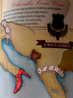

De: La Frikipedia, la enciclopedia extremadamente seria.
De: La Frikipedia, la enciclopedia extremadamente seria. De: La Frikipedia, la enciclopedia extremadamente seria.
| De la serie Países del planeta tierra: | |||||
| Црна Гора República comunista Marxista Yugoslava de Montenegro | |||||
|---|---|---|---|---|---|
| |||||
| Lema: ¡¡¡No es lo mismo Monte Negro a que te Monte un Negro!!! | |||||
| Himno: "Ojj Viva Le Yugoslavien Montenegrinen Repúbliken Muerten a Capitalisten!"
| |||||
| 
| |||||
| Capital | Montenegro City | ||||
| Mayor ciudad | Pollorina | ||||
| Lenguas oficiales | Montenegrino, Yugoslavo, Serbio. | ||||
| Gobierno | Comunismo. | ||||
| Jefe de Estado | Tito II | ||||
| Área | Por los balcanes por ahi cerca de serbia si, es punto o no ese no es es Kosovo el otro | ||||
| Población | 101, eran 102 pero Pedroic No vi el precipicio y murió | ||||
| Moneda | La de yoguslavia | ||||
| Zona horaria | GTM 3+ | ||||
| Dominio Internet | .comunis | ||||
| Código telefónico | 0800-Comunista Prefijo Tito
| ||||
| Amad a Yugoslavia, pecadores. | |||||
Montenegro (No que te Monte un Negro) Es un país le larga tradiccion Capitalista Comunista que limita con país pacificos como Serbia, Bosnia, Albania, Croacia y La republica de Kosovo Kosovo. Este pais es conocido como el Suertudo ya que a separse Serbia lo reconocio el Mismo Día el 3 de Junio de 2006 (No pudo ser el 3 días despues por que era feriado) y no hubo batalla. Ya que si el Negro se lo montaba a los Serbios y ahi nacio El nombre Montenegro (En montenegrino-kosovar-serbio-croata y otros idiomas ел негро љуе монта ал цапиталисмо, que en español seria el negro que monta al capitalismo) tiene un origen Balcan que significa que te va a montar un negro.
Hace 1000 años Montenegro era una de las muchas partes de Yugoslavia, luego, 500 años atrás se encontró a Serbia y se le pego, siendo la república de Serbia y Montenegro, que luego se hizo otra vez de Yugoslavia. Ahora Montenegro vive de carreras de caracoles y cerveza barata a los viajeros que quieren ir al supermercado (tan pequeño es Montenegro) y transmitiendo programas de belleza al estilo Zulma Lobato, hasta tienen su propio canal, "Montenegro's living for women", que esta peor que Antena 3.
Montenegro es el 5º país exportador de sanjacobos del mundo. El resto de la población se dedica a apalear albaneses y vender camisetas a los guiris.

Como lo ya mencionado, viven de carreras de Caracoles, los caracoles recorren todo Montenegro (ni se cansan) y el que llegue mas lento, gana. A pesar de esto, también ha participado en el Miss Universo 2050, 2060, y finalmente 3409 d.C..
La gran trolleada Del mundial 2006: En Nazilandia Alemania 2006 En el Grupo C se encontraba Serbia y Montenegro los cuales comenzaron a jugar en el mundial 11 de Junio de 2006. Pues ya se habia seperado su trolleada fue que Montenegro (Por que Serbia si entro en 2010) Queria jugar un mundial de Futbol y Serbia queria que Montenegro lo haga entonces decidieron juntarse, entrar y unos dias antes Entrar separarse.... Pero Serbia se puso furiosa ya que Pais Marihaneses (Paises bajos) Le gano 1 a 0 ahi la bronca comenzo, pero Llegaron con Argentina y ahi Argentina dijo son dos paises le metere un numero par asi quedan iguales y contentos y asi fue como Ganaron 6-0 3 para montenegro 3 para Serbia aunque serbia le sedio en esta oportuninidad 3 a Montenegro.
Cagarruta de trool, Sesos de caracol ganador, Vaquita frita a la montenigrense, etc. Son algunos de los manjares montenegrinos que podran disfrutarse en las posadas y bares gays de Montenegro.
Al ser un país mas pequeño que el cerebro de Homer Simpson, la autoestima de la mayoria de la población montenigrense es baja y de este pequeño país han salido cientos de Emos.
  Imperios de Europa Imperios de Europa
|
|---|
| Eslovaquia |
Autor(es):